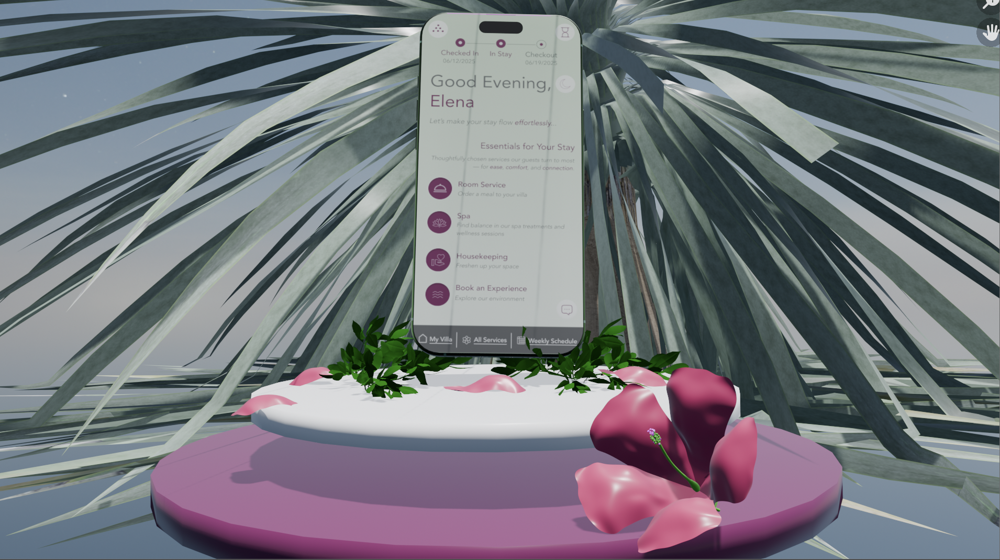

Product Interface: Six Senses Dashboard

Project Background
For our dashboard design project, our professors Vincent and Sofía let us to explore a wide range of focus areas —
from automotive and health to environmental and hospitality. I chose to focus on the hospitality category, specifically
that of hotel applications, as I believe this is an area filled with opportunities for improvement.
I’ve always been drawn to hospitality because I enjoy finding ways to make people’s lives easier, especially when they’re
on holiday and looking to truly rest and take a break from their busy everyday lives. As an avid traveler myself, I’ve interacted
with countless hotel apps and often found myself comparing how each caters to immediate guest needs, such as ordering room service,
booking activities, or scheduling a late checkout.
Recently, I had the opportunity to stay at a luxury resort called the Six Senses in Vietnam. The experience left a very strong impression on me,
to say the least, not only because of the resort’s breathtaking setting, but also because of the brand’s philosophy of mindfulness, immersion, nature,
environmental consciousness, and authenticity, which deeply resonated with me as an individual. However, one aspect that stood out as an area for potential
improvement was their digital guest dashboard and app functionality.
For this reason, I decided to center my dashboard redesign around Six Senses. As I continue to work on this project, my goals center around creating an interface
that not only caters to immediate guest needs but also aligns more closely with Six Senses's values, and ultimately, provides guests with a more seamless, sensory, and mindful
digital experience — one that truly complements the brand’s ethos.
Ideation
Since I was redesigning an app dashboard, I immediately knew that the product I needed to build in Blender would be a phone. However, I also wanted to go beyond simply modeling a
phone and find a way to bring a more human element into the design. To achieve this, I decided to also think about modelling a human hand that could hold the phone as a means to provide a sense of
interaction and grounding the digital interface within a real-world, human-centered context.
Because my user persona, Ava, developed during the initial stages of my dashboard design process, is a woman, I also wanted the hand to reflect a more feminine form and aesthetic —
subtle, graceful, and expressive of the persona’s character. This helped ensure that my 3D representation stayed consistent with the story and user focus reflective of my overall project.
While I have not yet finalized the environment in which the phone and hand will be placed, I am exploring options that align with Six Senses’ brand philosophy. Specifically, spaces that embody
nature, calm, and mindfulness. Possible directions include an empty villa room, a leaf setting, or another nature-inspired environment that complements the essence of the Six Senses experience.
Once I had decided on these core components, I began the sketching phase on my iPad, creating several concept sketches (some without the hand and some with) to visualize different compositions and arrangements before moving onto the
actual 3D modeling process in Blender.
Blender Design-Work
This stage of the project is very much a work in progress, and I am still in the early phases of developing my 3D models. My goal so far has been to
experiment and challenge myself by creating the base structures for both the hand and the phone within Blender.
The hand model in particular has been a significant challenge to say the least. As someone with beginner-level experience, it required a lot of trial and
error to understand the anatomy, proportions, and form needed to make it look natural and believable. Despite these challenges, I am proud of the progress I have made so far.
With some guidance, I hope to continue refining the shape of the hand to better capture the aesthetic and emotional tone that I have envisioned.
The phone model was comparatively more straightforward to create, and while the base structure looks solid at this stage, I do want to add finer details to make it more realistic and tactile.
Once both models are more developed, the next key step will be to position the hand and phone together in a way that feels natural, balanced, and visually coherent within the environment I choose to build around them.
Second Week Progress & Final Prototype
As I moved into the second week of this project, I decided to make a significant pivot from my initial plan. Originally, my idea was to incorporate both the hand and phone structures as key elements of my 3D prototype.
However, after reflecting on my current level of experience in Blender, I realized that it would be more effective to simplify my approach and focus on creating a refined and confident design rather than pursuing something
overly complex that might feel unfinished or inconsistent.
I began by selecting a detailed iPhone 16 Pro Max model to serve as the centerpiece of my composition.
I positioned it so that it appears to float gently above several cylindrical bases I manually modeled and colored in the signature Six Senses palette. Surrounding the base, I incorporated tropical elements — including plants and flowers —
that evoke relaxation and natural beauty. These were sourced and modified from several Sketchfab models:
Beaked Yucca,
Bay Leaves,
and a Hibiscus Flower.
I deconstructed the flower further to get some petals that I could place around the cylinders as a means to mirror the natural atmosphere found in Six Senses’ resort environments.
For the environment, I decided to take a more abstract approach rather than a literal recreation of a hotel setting. I chose a beautiful HDRI backdrop titled
Qwantani Moon Noon Puresky from PolyHaven, which features a tranquil sky (that also resembles the sea to me!).
My goal was to find an environemnt that created a surreal, dreamlike atmosphere that reflected the serenity I associate with Six Senses.
In my final layout, I positioned the large tropical plant behind the phone to serve as a natural backdrop against the open sky,
with the dashboard interface (UV-edited onto the phone’s screen) hovering gracefully above the cylinders. A singular hibiscus flower, its petals, and other leaves are scattered around the cylinder.
Overall, I think this new direction allowed me to build a composition that I felt much more confident and proud of — one that remains faithful to the Six Senses identity, while reflecting my own personal design sensibilities.
This pivot served as a reminder that sometimes simplifying a concept can actually lead to a stronger, more cohesive final result.
Final Renders


Final Prototype Video
I am currently having some problems rendering my final animated video. Once this issue is resolved, I will be sure to update!